.
I toyed briefly with chopping up the composites a different way and counting how many
whole number pairs (not just primes) satisfying all the various equations like
$a^4 \cdot b \le n$, where $a > 1$ and $b > 1$, which on the following page is what
I mean by 5[4,1],
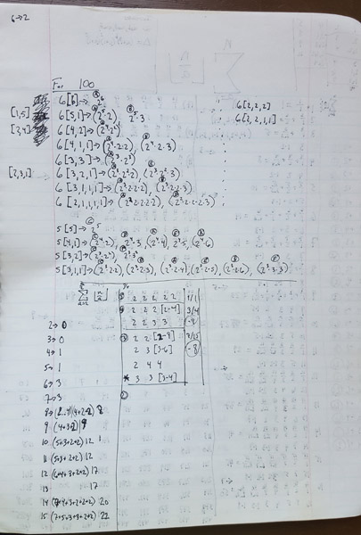
before shying away from the intimidating complexity of that approach.
And so I decided instead to just count certain simpler sets of pairs / triplets / etc
of composities and see if I could notice any useful patterns as I went.
Page 13 is a great, clear example of this idea, which continues on to the top of page 15.
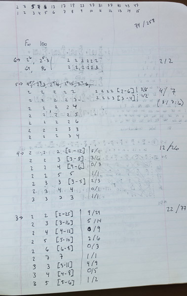
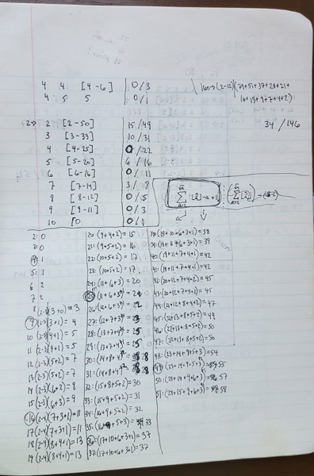
So, on this page, when I say $2 \to$, I'm counting the solutions to $a \cdot b \le 100$,
where $2 \le a \le b$.
When I say $3 \to$, I'm counting the solutions to $a \cdot b \cdot c \le 100$,
where $2 \le a \le b \le c$.
And when I say $4 \to$, I'm counting the solutions to $a \cdot b \cdot c \cdot d \le 100$,
where $2 \le a \le b \le c \le d$.
And so on.
When I use notation like $[2-12]$, I'm just gesturing at the range of numbers between $2$ and $12$
inclusive.
The numbers out to the right side are the counts I was investigating. The number
before the slash is the count of numbers $\le 100$ that have, say, 4 distinct prime factors (which is $12$).
The corresponding number after the slash is the count of solutions to
$a \cdot b \cdot c \cdot d \le 100$, where $2 \le a \le b \le c \le d$ (here, $26$).
Thus $12 / 26$ for $4 \to$.
This kind of counting (which I did intuitively) would naturally count numbers in their prime
factored form only once.
For example, $84$, which
is $ 2 \cdot 2 \cdot 3 \cdot 7$, is only ever counted once, during the case of $4 \to$, as one solution
to $a \cdot b \cdot c \cdot d \le 100$, with $2 \le a \le b \le c \le d$. It would also be
counted a couple times for the cases of $2 \to$ and $3 \to$ (say as $2 \cdot 3 \cdot 14$).
The hope would be to find some way to identify that as a duplication without needing
to factor any numbers, which is very slow.
So that was intuitively why I counted this way. It also had the virtue of being reasonable
for me to do by hand with my TI-85, at least for somewhat small numbers.
This set of ideas felt far more tractable to me - I needed to look at these duplications
(like the case of $12/26$) and find a way to reason about them, to count the
$26$ and then find a way to count that $14$ of them are duplicates.
So I stuck with this idea for quite a while. I was quite taken with it.
You can see me working through more examples of this exact approach, doing more
counting, trying to gain better intuitions about those duplicates, on page 16 (for the case
of $n=80$) and page 17 (for the case of $n=160$)
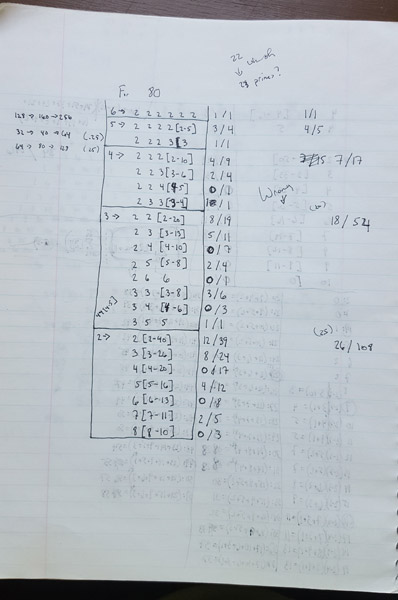
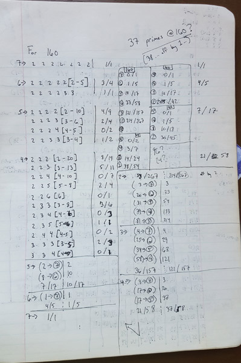
I started exploring this more in earnest over the next several pages, first doing $n=40$,
$n=42$, $n=48$, and then looking at more condensed examples for $n=\{44,57\}$.
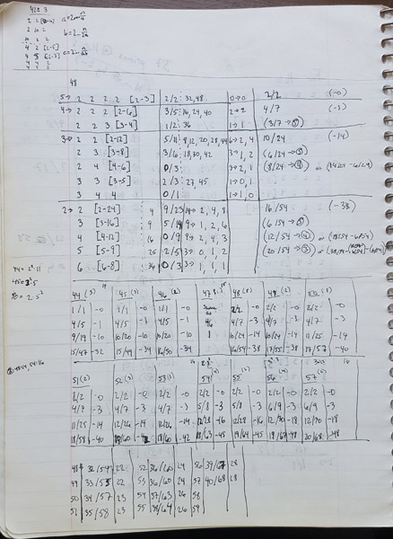
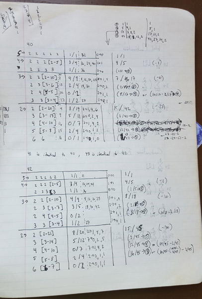
I started looking at more bulk values, for the cases for $n=40$ to $n=160$ by 10s,
and for $n=\{51,80\}$.
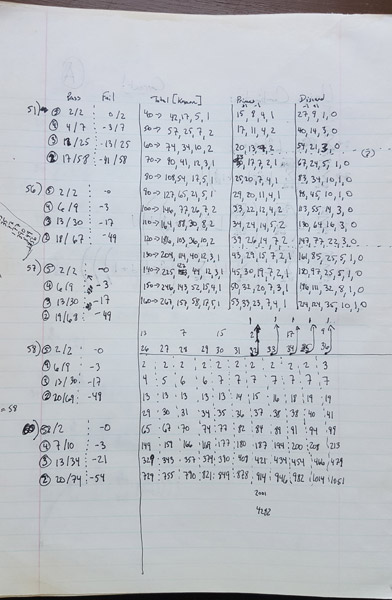
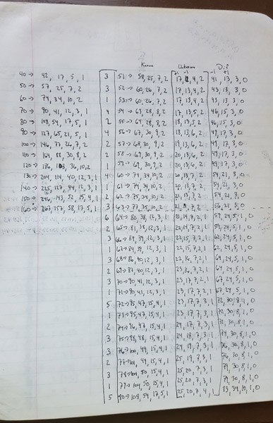
I went back and looked at lower values too, for $n=\{7-24\}$.
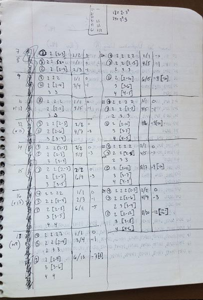
I really spent a while with this, trying to come up with a methodical way to think
about the overcounting I was seeing. I had plenty of examples, but I could
feel like some fundamental concept was eluding me.
I started trying to reason about where, or when, the differences were showing up.
You can see that here, in the mid-part of this page.
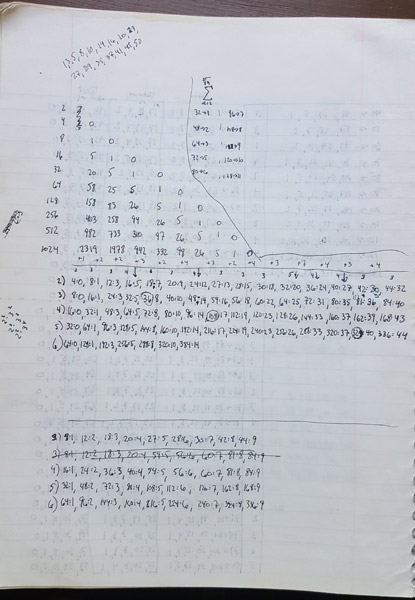
Here, as just one example of what I was doing, in the line that begins "2)". If you take
the difference between the count of solutions to $a \cdot b \le n$ with $2 \le a \le b$ ,
and $\sum_{j=1}^n 1_{\Omega(j)=2}(j)$, that difference is $0$ when n is $4$,
it bumps up to $1$ when $n=8$, to $3$ when $n=12$, to $5$ when $n=16$, and so on.
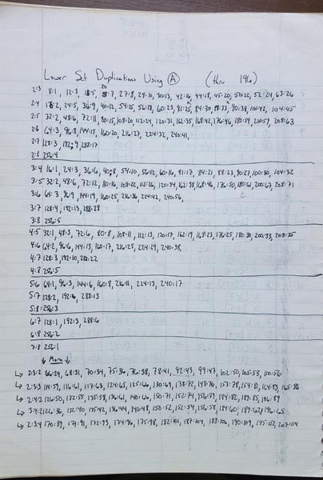
{kind=link}
{kind=link}
{kind=link}
{kind=link}
{kind=link}
{kind=link}
{kind=link}
{kind=link}
{kind=link}
{kind=link}
{kind=link}
{kind=link}